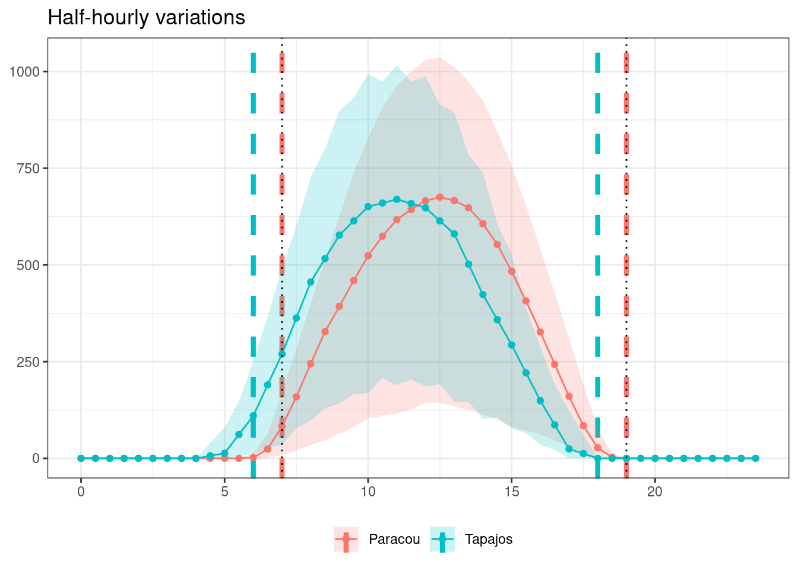
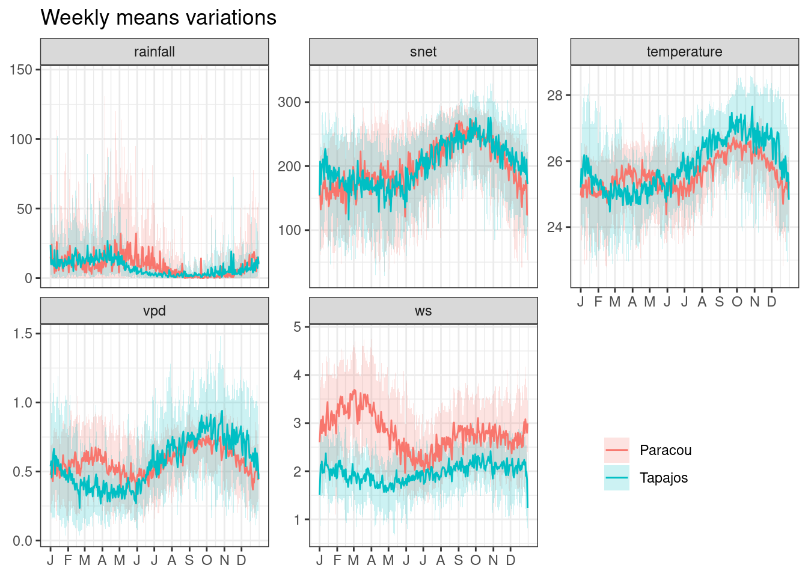
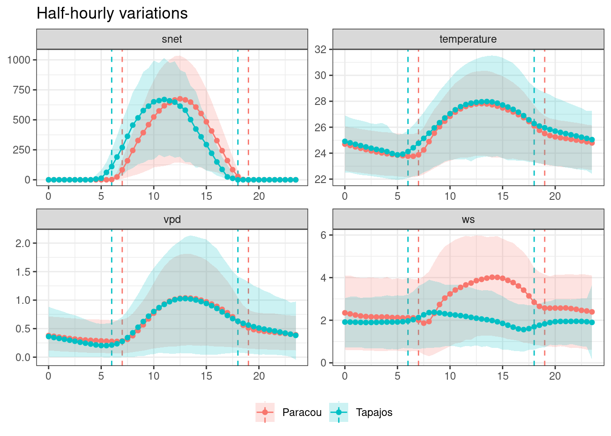

Climatic data for Paracou and Tapajos used for the TROLL evaluation.
ERA5-Land
ERA5-Land is a global reanalysis dataset (Muñoz-Sabater et al. 2021). ERA5-Land at Paracou was retrieved from the Climate Data Store (CDS) using the R package rcontroll(Schmitt et al. 2023). ERA5-Land at Tapajos was retrieved from Open-Meteo using mamba environment and python script available in the data folder. ERA5-Land was mainly used to validate FLUXNET 2015 and gap-filling.
FLUXNET 2015
FLUXNET 2015 (Pastorello, Gilberto et al. 2020) at Paracou and Tapajos was retrieved freely from FLUXNET (the manifest is available in data). They are mainly used for TROLL model forcing but also include fluxes for TROLL simulations validation. However, FLUXNET 2015 precipitation data at Tapajos are not reliable, we thus replaced it with precipitation from ERA5-Land.
The FLUXNET2015 Dataset includes data collected at sites from multiple regional flux networks. The preparation of this FLUXNET Dataset has been possible thanks only to the efforts of many scientists and technicians around the world and the coordination among teams from regional networks.
PI: Damien Bonal (Paracou), Mike Goulden (Tapajos), Scott Saleska (Tapajos)
Code
fluxnet <-list("Paracou"="data/climate/FLX_GF-Guy_FLUXNET2015_SUBSET_HH_2004-2014_2-4.csv","Tapajos"="data/climate/FLX_BR-Sa1_FLUXNET2015_SUBSET_HR_2002-2011_1-4.csv") %>%lapply(vroom::vroom, na ="-9999") %>%bind_rows(.id ="site") %>%select(site, TIMESTAMP_START, TIMESTAMP_END, P_F, SW_IN_F, TA_F, VPD_F, WS_F, GPP_NT_VUT_REF, LE_F_MDS) %>%mutate(time =as_datetime(as.character(as.POSIXlt(as.character(TIMESTAMP_START), format ="%Y%m%d%H%M")))) %>%rename(rainfall = P_F, snet = SW_IN_F, temperature = TA_F, vpd = VPD_F, ws = WS_F) %>%mutate(vpd = vpd/10) %>%select(site, time, rainfall, snet, temperature, vpd, ws)fluxnet_tapajos <-filter(fluxnet, site =="Tapajos")era <- vroom::vroom("data/climate/era5_tapajos.csv") %>%filter(year(date) >2001) %>%mutate(time =as_datetime(date), rainfall = precipitation) %>%select(time, rainfall)fluxnet_tapajos <- fluxnet_tapajos %>%select(-rainfall) %>%left_join(era)time_freq <-0.5# TROLL v4start <-as_datetime(as_date(min(fluxnet_tapajos$time))) # to start from 00:30stop <-max(fluxnet_tapajos$time) +30*60# to stop at 23:00time <-seq(start, stop, by =60*60* time_freq)data <-left_join(tibble(time = time), fluxnet_tapajos,by ="time" ) %>%group_by(date =as_date(time)) %>%mutate(across(c(temperature, vpd, ws),~ zoo::na.spline(., time, na.rm =FALSE))) %>%mutate(across(c(snet),~ zoo::na.approx(., time, na.rm =FALSE))) %>%ungroup() %>%select(-date) %>%mutate(across(c(snet), ~ifelse(is.na(.), 0, .))) %>%mutate(across(c(snet), ~ifelse(. <0, 0, .))) %>%mutate(site ="Tapajos")bind_rows(filter(fluxnet, site =="Paracou"), data) %>%write_tsv("outputs/fluxnet_climate.tsv")
Comparisons
ERA5-Land and FLUXNET2015 showed high correlation which comforted us in using ERA5-Land to gap-fill FLUXNET2015 precipitaiton data at Tapajos.
We thus need to defined day limits in time at a half-hourly precision. For that we used daily variations of snet. We thus used 7-19h for Paracou and 6-18h for Tapajos.
Code
read_tsv("outputs/fluxnet_climate.tsv") %>%group_by(site, time = hms::as_hms(time)) %>%summarise(l =quantile(snet, 0.025, na.rm =TRUE), m =mean(snet, na.rm =TRUE), h =quantile(snet, 0.975, na.rm =TRUE)) %>%mutate(time =as.numeric(time)/(60*60)) %>%ggplot(aes(time, m, col = site, fill = site)) +geom_vline(data =data.frame(time =c(7, 19, 6, 18), site =c("Paracou", "Paracou","Tapajos", "Tapajos")), aes(xintercept = time, col = site), linetype ="dashed", linewidth =1.5) +geom_ribbon(aes(ymin = l, ymax = h), col =NA, alpha =0.2) +geom_line() +geom_point() +theme_bw() +theme(axis.title =element_blank(), legend.position ="bottom") +ggtitle("Half-hourly variations") +scale_fill_discrete("") +scale_color_discrete("") +geom_vline(xintercept =c(7, 19), linetype ="dotted")

Dry seasons
For representation and discussion purposes we defined dry season as 15-days period below 50 mm in means across years (corresponding to month below 100 mm from BONAL et al. (2008) but see Fu et al. (2013) for a more precise approach). We thus defined a 4-month dry season in Paracou from 8/1 to 12/1 and an almost 5-month dry season in Tapajos from 6/15 to 11/1.
For data exploration purposes, we represented climate variations at multiple time steps (year, month, half-month, week, day, and half-hour), but ultimately TROLL is forced with half-hourly variations except for precipitation which is daily.
Code
read_tsv("outputs/fluxnet_climate.tsv") %>%gather(variable, value, -site, -time) %>%group_by(site, variable, date =date(time)) %>%select(-time) %>%mutate(value =ifelse(variable %in%c("rainfall", "snet"),sum(value, na.rm = T), value)) %>%summarise_all(mean) %>%group_by(site, variable, year =year(date)) %>%select(-date) %>%mutate(value =ifelse(variable %in%c("rainfall"),sum(value, na.rm = T), value)) %>%summarise(l =quantile(value, 0.025, na.rm =TRUE), m =mean(value, na.rm =TRUE), h =quantile(value, 0.975, na.rm =TRUE)) %>%ggplot(aes(year, m, col = site, fill = site)) +geom_ribbon(aes(ymin = l, ymax = h), col =NA, alpha =0.2) +geom_line() +geom_point() +theme_bw() +theme(axis.title =element_blank(), legend.position =c(0.8, 0.2)) +ggtitle("Yearly variations of daily means") +scale_fill_discrete("") +scale_color_discrete("") +facet_wrap(~ variable, scales ="free_y")
read_tsv("outputs/fluxnet_climate.tsv") %>%gather(variable, value, -site, -time) %>%group_by(site, variable, date =floor_date(time, "day")) %>%select(-time) %>%mutate(value =ifelse(variable %in%c("rainfall"),sum(value, na.rm = T), value)) %>%summarise_all(mean) %>%group_by(site, variable, day =yday(date)) %>%summarise(l =quantile(value, 0.025, na.rm =TRUE), m =mean(value, na.rm =TRUE), h =quantile(value, 0.975, na.rm =TRUE)) %>%ggplot(aes(day, m, col = site, fill = site)) +geom_ribbon(aes(ymin = l, ymax = h), col =NA, alpha =0.2) +geom_line() +theme_bw() +theme(axis.title =element_blank(), legend.position =c(0.8, 0.2)) +ggtitle("Weekly means variations") +scale_fill_discrete("") +scale_color_discrete("") +facet_wrap(~ variable, scales ="free_y") +scale_x_continuous(breaks =yday(as_date(paste("2000-", 1:12, "-01"))),labels =c("J", "F", "M", "A", "M", "J", "J", "A", "S", "O", "N", "D"))

Code
read_tsv("outputs/fluxnet_climate.tsv") %>%gather(variable, value, -site, -time) %>%filter(variable %in%c("snet", "temperature", "vpd", "ws")) %>%group_by(site, variable, time = hms::as_hms(time)) %>%summarise(l =quantile(value, 0.025, na.rm =TRUE), m =mean(value, na.rm =TRUE), h =quantile(value, 0.975, na.rm =TRUE)) %>%mutate(time =as.numeric(time)/(60*60)) %>%ggplot(aes(time, m, col = site, fill = site)) +geom_vline(data =data.frame(time =c(7, 19, 6, 18), site =c("Paracou", "Paracou","Tapajos", "Tapajos")), aes(xintercept = time, col = site), linetype ="dashed") +geom_ribbon(aes(ymin = l, ymax = h), col =NA, alpha =0.2) +geom_line() +geom_point() +theme_bw() +facet_wrap(~ variable, scales ="free") +theme(axis.title =element_blank(), legend.position ="bottom") +ggtitle("Half-hourly variations") +scale_fill_discrete("") +scale_color_discrete("")

BONAL, DAMIEN, ALEXANDRE BOSC, STÉPHANE PONTON, JEAN-YVES GORET, BENOÎT BURBAN, PATRICK GROSS, JEAN-MARC BONNEFOND, et al. 2008. “Impact of Severe Dry Season on Net Ecosystem Exchange in the Neotropical Rainforest of French Guiana.”Global Change Biology 14 (8): 1917–33. https://doi.org/10.1111/j.1365-2486.2008.01610.x.
Fu, Rong, Lei Yin, Wenhong Li, Paola A. Arias, Robert E. Dickinson, Lei Huang, Sudip Chakraborty, et al. 2013. “Increased Dry-Season Length over Southern Amazonia in Recent Decades and Its Implication for Future Climate Projection.”Proceedings of the National Academy of Sciences 110 (45): 18110–15. https://doi.org/10.1073/pnas.1302584110.
Muñoz-Sabater, Joaquín, Emanuel Dutra, Anna Agustí-Panareda, Clément Albergel, Gabriele Arduini, Gianpaolo Balsamo, Souhail Boussetta, et al. 2021. “ERA5-Land: A State-of-the-Art Global Reanalysis Dataset for Land Applications.”Earth System Science Data 13 (9): 4349–83. https://doi.org/10.5194/essd-13-4349-2021.
Pastorello, Gilberto, Trotta, Carlo, Canfora, Eleonora, Chu, Housen, Christianson, Danielle, Cheah, You-Wei, Poindexter, Cristina, et al. 2020. “The FLUXNET2015 Dataset and the ONEFlux Processing Pipeline for Eddy Covariance Data.”Nature Publishing Group. https://doi.org/10.5167/UZH-190509.
Schmitt, Sylvain, Guillaume Salzet, Fabian Jörg Fischer, Isabelle Maréchaux, and Jerome Chave. 2023. “Rcontroll: An R Interface for the Individual-Based Forest Dynamics Simulator TROLL.”Methods in Ecology and Evolution 14 (11): 2749–57. https://doi.org/10.1111/2041-210x.14215.